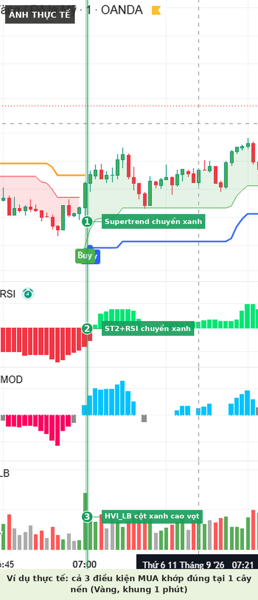
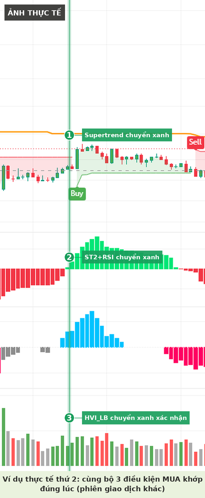
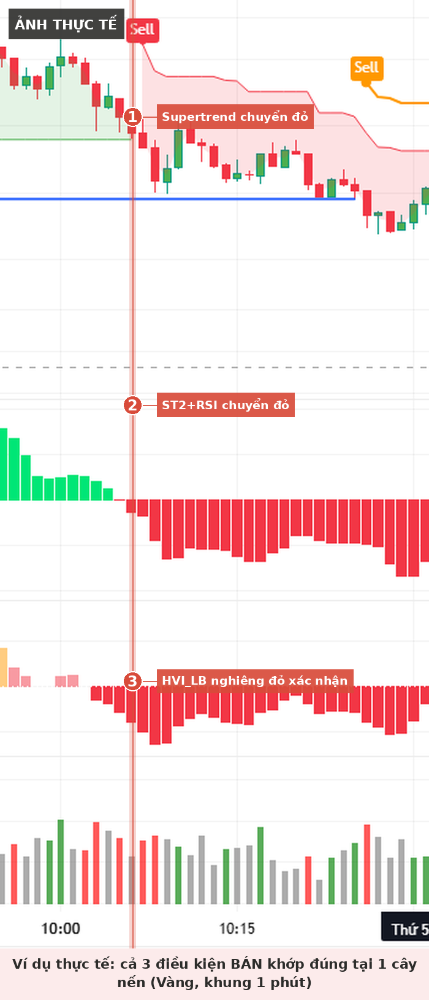
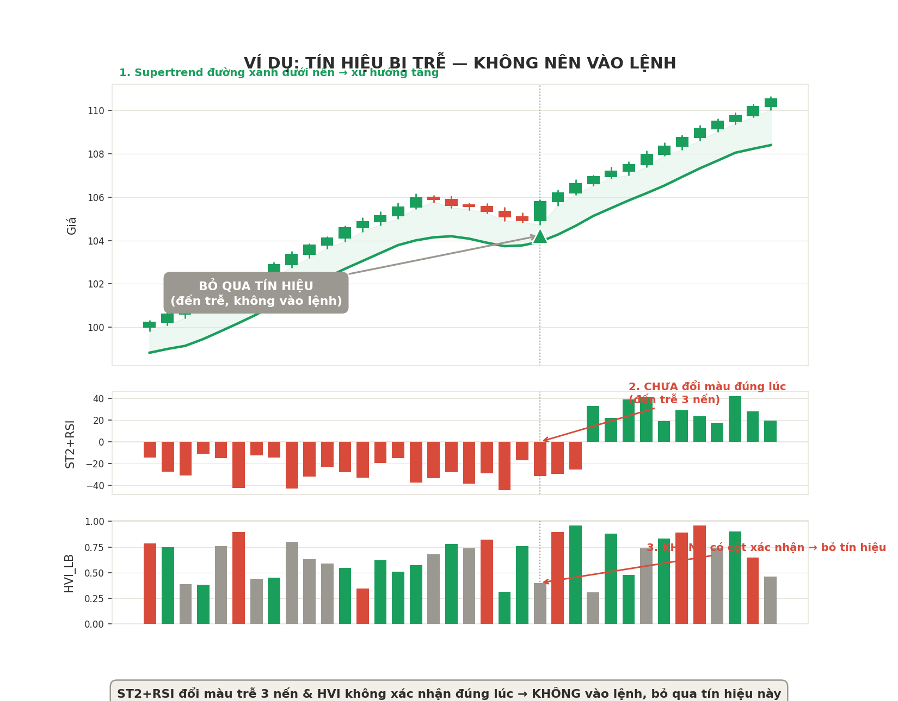

Bộ quy tắc giao dịch dựa trên 3 chỉ báo, thay QQE MOD bằng ST2+RSI để giảm nhiễu tín hiệu và tránh trùng lặp thông tin giữa các chỉ báo.
Lưu ý quan trọng — đây là tài liệu tổng hợp mang tính giáo dục và ghi chú cá nhân, không phải lời khuyên đầu tư. Kết quả backtest trong quá khứ không đảm bảo hiệu suất tương lai. Luôn tự kiểm chứng chiến lược bằng backtest / forward-test trước khi dùng vốn thật.
Về hình ảnh minh họa — ảnh đánh dấu "ảnh thực tế" được crop trực tiếp từ chart giao dịch thật (TradingView/OANDA) đã backtest, đánh số 1-2-3 chỉ rõ từng điều kiện. Ảnh còn lại (tín hiệu bị trễ) là ảnh dựng lại mang tính minh họa, không phải chart thật.
01
Cài đặt chỉ báo
Chỉ báo
Vai trò
Cài đặt
Supertrend
Xác định xu hướng chính
ATR Period = 20, ATR Multiplier = 5
ST2+RSI
Bộ lọc động lượng (thay QQE MOD)
Cột xanh = động lượng tăng, cột đỏ = động lượng giảm
HVI_LB (Lazy Bear Volume)
Bộ lọc khối lượng, xác nhận cuối cùng
Giá trị 1.5
02
Quy tắc vào lệnh MUA
LONG
Cần đủ cả 3 điều kiện sau, xảy ra cùng lúc hoặc trễ tối đa 1–2 nến:
1Supertrend đang ở trạng thái tăng — đường xanh nằm dưới nến.
2ST2+RSI chuyển sang màu xanh — động lượng chuyển từ giảm sang tăng.
3HVI_LB xuất hiện cột màu xanh lá — xác nhận có lực mua thực sự, không phải tăng ảo.

ẢNH THỰC TẾ Vàng (XAU/USD), khung 1 phút — cả 3 điều kiện khớp đúng tại cùng 1 cây nến: Supertrend chuyển xanh (1), ST2+RSI chuyển xanh (2), HVI_LB có cột xanh cao vọt xác nhận (3).

ẢNH THỰC TẾ Phiên giao dịch khác — cùng bộ 3 điều kiện lặp lại chính xác, cho thấy tính nhất quán của quy tắc.
03
Quy tắc vào lệnh BÁN
SHORT
Ngược lại hoàn toàn với lệnh mua, cần đủ cả 3 điều kiện:
1Supertrend đang ở trạng thái giảm — đường đỏ nằm trên nến.
2ST2+RSI chuyển sang màu đỏ — động lượng chuyển từ tăng sang giảm.
3HVI_LB xuất hiện cột màu đỏ — xác nhận lực bán thực sự.

ẢNH THỰC TẾ Vàng (XAU/USD), khung 1 phút — cả 3 điều kiện khớp đúng tại cùng 1 cây nến: Supertrend chuyển đỏ (1), ST2+RSI chuyển đỏ (2), HVI_LB nghiêng đỏ xác nhận (3).
04
Quản lý vốn
Stop loss (Lệnh mua)
Đặt tại đáy gần nhất trước điểm vào lệnh (swing low)
Stop loss (Lệnh bán)
Đặt tại đỉnh gần nhất trước điểm vào lệnh (swing high)
Take profit
Luôn bằng 1.5 lần khoảng cách từ giá vào lệnh đến stop loss (risk-reward = 1 : 1.5)
05
Những trường hợp không vào lệnh
01ST2+RSI đổi màu nhưng HVI_LB không xác nhận cùng lúc.Bỏ qua tín hiệu, không chờ nến sau
02Giá đi ngang, nến nhỏ, lộn xộn (sideway).Không vào lệnh, dễ bị pullback quét stop loss
03Supertrend chưa đổi màu nhưng 2 chỉ báo còn lại đã đổi.Chưa đủ điều kiện, chờ Supertrend xác nhận
04Có tín hiệu ngược chiều Supertrend dù 2 chỉ báo còn lại mạnh.Không vào lệnh, ưu tiên xu hướng chính

ẢNH DỰNG LẠI Trường hợp không nên vào lệnh — ST2+RSI đổi màu trễ 3 nến sau điểm Supertrend xác nhận, HVI_LB không có cột xác nhận đúng lúc. Tín hiệu nên bỏ qua, không chờ đợi để vào trễ.
06
Vì sao bỏ QQE MOD, dùng ST2+RSI
QQE MOD và RSI đều bắt nguồn từ cùng một logic tính toán — QQE MOD thực chất là RSI được làm mượt thêm qua ATR-smoothing — nên giữ cả hai gây trùng lặp thông tin, không tăng thêm giá trị.
Qua đối chiếu nhiều khung giờ thực tế, ST2+RSI phản ứng nhanh và dứt khoát hơn tại các điểm đảo chiều quan trọng, trong khi QQE MOD có xu hướng "do dự" (nhiều đoạn màu nhạt) trước khi xác nhận.
Bỏ QQE MOD giúp có thêm chỗ trống để giữ HVI_LB làm bộ lọc khối lượng độc lập — chỉ báo mang giá trị thông tin mới thực sự, không tính từ giá như hai chỉ báo động lượng còn lại.
07
Nhật ký backtest
Dùng bảng này để ghi lại kết quả mỗi lần backtest / forward-test, giúp so sánh hiệu suất theo thời gian.